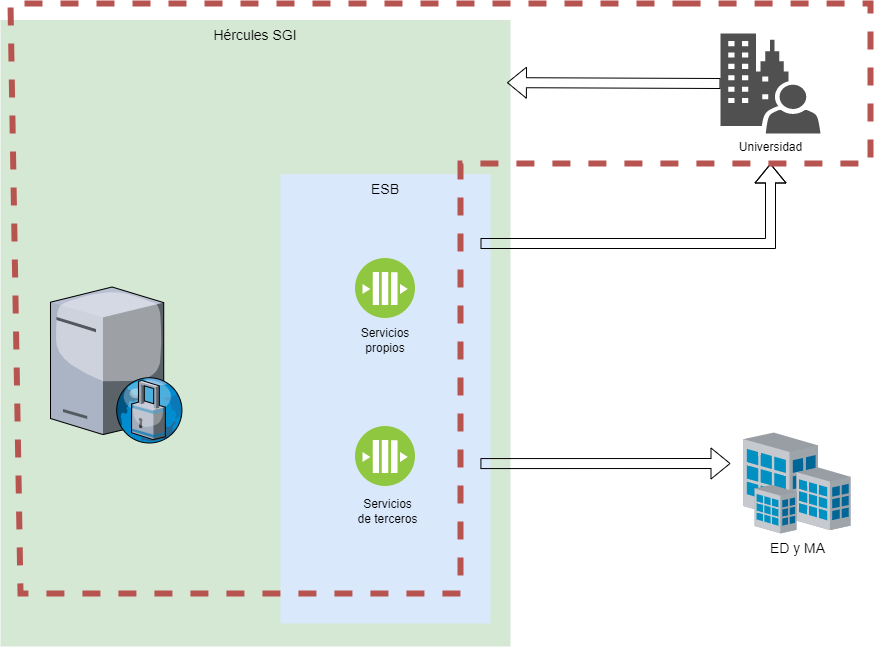

Created by Usuario genérico para HERCULES, last modified by Reyes Hernández-Mora Martínez on feb 29, 2024
Introducción

A continuación se recoge la lista de servicios que un tercero deberá desarrollar, de manera obligatoria u opcional (solo si se quiere tener activa la funcionalidad para la que se usa), para poder implantar el SGI en función del módulo o módulos que quiera activar.
Los servicios requeridos son aquellos imprescindibles para el funcionamiento del SGI bien en su totalidad bien en lo referente al módulo concreto en el que se incluyen.
Para los servicios opcionales, se indica en cada caso qué funcionalidad es la que estaría o no disponible en función de si se implementan o no.
Servicios a desarrollar para todos los módulos
Servicios requeridos
| SGI - ESB - SGP - Categorías profesionales - Listar | GET | /categorias-profesionales |
| SGI - ESB - SGP - Personas - Consultar detalle de categoría profesional | GET | /categorias-profesionales/{id} |
| SGI - ESB - SGP - Colectivos - Listar | GET | /colectivos |
| SGI - ESB - SGP - Personas - Consultar datos académicos | GET | /datos-academicos/persona/{id} |
| SGI - ESB - SGP - Personas - Consultar datos contacto | GET | /datos-contacto/persona/{id} |
| SGI - ESB - SGP - Personas - Consultar datos personales | GET | /datos-personales/persona/{id} |
| SGI - ESB - SGP - Dirección de tesis - Buscar | GET | /direccion-tesis |
| SGI - ESB - SGP - Niveles académicos - Listar | GET | /niveles-academicos |
| SGI - ESB - SGP - Niveles académicos - Consultar detalle | GET | /niveles-academicos/{id} |
| SGI - ESB - SGP - Personas - Buscar | GET | /personas |
| SGI - ESB - SGP - Personas - Consultar detalle (Datos generales) | GET | /personas/{id} |
| SGI - ESB - SGP - Personas - Consultar detalle de fotografía | GET | /personas/{id}/fotografia |
| SGI - ESB - SGP - Personas - Buscar (Búsqueda rápida) | GET | /personasFast |
| SGI - ESB - SGP - Sexenios - Buscar | GET | /sexenios |
| SGI - ESB - SGP - Sexos - Listar | GET | /sexos |
| SGI - ESB - SGP - Tipos de documento - Listar | GET | /tipos-documento |
| SGI - ESB - SGP - Personas - Consultar vinculaciones | GET | /vinculaciones/persona/{id} |
| SGI - ESB - SGP - Personas - Consultar datos de vinculacion-categoría | GET | /vinculaciones/persona/{id}/vinculaciones-categorias-profesionales |
Servicios opcionales
Son únicamente necesarios si se requiere gestionar personas desde el SGI (Alta, Baja, Modificación y Detalle).
| SGI - ESB - SGP - Personas - Modificar | PUT | /personas |
| SGI - ESB - SGP - Personas - Dar de alta | POST | /personas |
| SGI - ESB - SGP - Personas - Consultar detalle | GET | /personas/formly/{id} |
| SGI - ESB - SGP - Personas - Consultar campos alta | GET | /personas/formly/create |
| SGI - ESB - SGP - Personas - Consultar campos modificación | GET | /personas/formly/update |
| SGI - ESB - SGP - Personas - Consultar campos ver detalle | GET | /personas/formly/view |
Servicios a desarrollar para el módulo de Convocatorias, Solicitudes, Ayudas y Proyectos (CSP)
Servicios requeridos
| SGI - ESB - SGEMP - Empresas - Consultar datos contacto | GET | /datos-contacto/empresa/{id} |
| SGI - ESB - SGEMP - Empresas - Buscar | GET | /empresas |
| SGI - ESB - SGEMP - Empresas - Consultar detalle | GET | /empresas/{id} |
| SGI - ESB - SGEMP - Empresas - Listar tipos de identificador | GET | /tipos-identificador |
Servicios opcionales
Son únicamente necesarios si se requiere gestionar empresas desde el SGI (Alta, Baja, Modificación y Detalle).
| SGI - ESB - SGEMP - Empresas - Modificar | PUT | /empresas |
| SGI - ESB - SGEMP - Empresas - Dar de alta | POST | /empresas |
| SGI - ESB - SGEMP - Empresas - Consultar campos ver detalle-modificar | GET | /empresas/formly/{id} |
| SGI - ESB - SGEMP - Empresas - Consultar campos alta | GET | /empresas/formly/create |
Servicios requeridos
| SGI - ESB - SGE - Proyecto SGE y presupuesto - Listar códigos económicos de gasto | GET | /codigos-economicos-gastos |
| SGI - ESB - SGE - Proyecto SGE y presupuesto - Consultar detalle de código económico de gasto | GET | /codigos-economicos-gastos/{id} |
| SGI - ESB - SGE - Proyecto SGE y presupuesto - Listar códigos económicos de gastos | GET | /codigos-economicos-ingresos |
| SGI - ESB - SGE - Proyecto SGE y presupuesto - Consultar detalle de código económico de ingreso | GET | /codigos-economicos-ingresos/{id} |
| SGI - ESB - SGE - Proyecto SGE y presupuesto - Buscar proyecto | GET | /proyectos |
| SGI - ESB - SGE - Proyecto SGE y presupuesto - Consultar detalle de proyecto | GET | /proyectos/{id} |
| SGI - ESB - SGE - Proyecto SGE y presupuesto - Dar de alta proyecto | POST | /proyectos/formly |
| SGI - ESB - SGE - Proyecto SGE y presupuesto - Modificar proyecto | PUT | /proyectos/formly/{id} |
| SGI - ESB - SGE - Proyecto SGE y presupuesto - Obtener campos alta proyecto | GET | /proyectos/formly/create |
| SGI - ESB - SGE - Proyecto SGE y presupuesto - Obtener campos modificación proyecto | GET | /proyectos/formly/update |
| SGI - ESB - SGE - Calendario facturación - Descargar documento | GET | /documentos/{id}/archivo |
| SGI - ESB - SGE - Calendario facturación - Consultar facturas emitidas | GET | /facturas-emitidas |
| SGI - ESB - SGE - Calendario facturación - Consultar detalle factura emitida | GET | /facturas-emitidas/{id} |
| SGI - ESB - SGE - Calendario facturación - Consultar columnas facturas emitidas | GET | /facturas-emitidas/columnas |
| SGI - ESB - SGE - Calendario facturación - Consultar facturas previstas emitidas | GET | /facturas-previstas-emitidas |
Servicios opcionales
Son únicamente necesarios si se requiere enviar al sistema de gestión económica de la Universidad las partidas presupuestarias por anualidad de un proyecto.
| SGI - ESB - SGE - Proyecto SGE y presupuesto - Enviar partidas presupuestarias | POST | /proyectos/anualidades/ |
Son únicamente necesarios si se quiere gestionar la ejecución económica de los proyectos implementada en el SGI que, a su vez, necesita comunicarse con el Sistema de Ejecución Económica de la Universidad.
| SGI - ESB - SGE - Ejecución económica - Consultar detalle de documento | GET | /documentos/{id} |
| SGI - ESB - SGE - Ejecución económica - Consultar fichero de documento | GET | /documentos/{id}/archivo |
| SGI - ESB - SGE - Ejecución económica - Consultar datos económicos | GET | /ejecucion-economica |
| SGI - ESB - SGE - Ejecución económica - Consultar detalle de dato económico | GET | /ejecucion-economica/{id} |
| SGI - ESB - SGE - Ejecución económica - Consultar columnas | GET | /ejecucion-economica/columnas |
| SGI - ESB - SGE - Ejecución económica - Consultar detalle de gasto | GET | /gastos/{id} |
| SGI - ESB - SGE - Ejecución económica - Rechazar gasto | PATCH | /gastos/{id}/rechazar |
| SGI - ESB - SGE - Ejecución económica - Validar gasto | PATCH | /gastos/{id}/validar |
| SGI - ESB - SGE - Ejecución económica - Consultar columnas de gastos | GET | /gastos/columnas |
Son únicamente necesarios si se quiere gestionar la amortización de fondos de los proyectos implementada en el SGI que, a su vez, necesita comunicarse con el Sistema de Ejecución Económica de la Universidad.
| SGI - ESB - SGE - Amortización fondos - Crear período amortización | POST | /periodos-amortizacion |
| SGI - ESB - SGE - Amortización fondos - Eliminar período amortización | DELETE | /periodos-amortizacion/{id} |
| SGI - ESB - SGE - Amortización fondos - Modificar período amortización | PUT | /periodos-amortizacion/{id} |
Servicios requeridos
| SGI - ESB - SGO - Áreas de conocimiento - Buscar | GET | /areas-conocimiento |
| SGI - ESB - SGO - Áreas de conocimiento - Consultar detalle | GET | /areas-conocimiento/{id} |
| SGI - ESB - SGO - Clasificaciones - Consultar detalle | GET | /clasificaciones/{id} |
| SGI - ESB - SGO - Países - Listar | GET | /paises |
| SGI - ESB - SGO - Centros - Listar | GET | /centros |
| SGI - ESB - SGO - Centros - Consultar detalle | GET | /centros/{id} |
| SGI - ESB - SGO - Comunidades autónomas - Buscar | GET | /comunidades-autonomas |
| SGI - ESB - SGO - Países - Consultar detalle | GET | /paises/{id} |
| SGI - ESB - SGO - Provincias - Buscar | GET | /provincias |
| SGI - ESB - SGO - Clasificaciones - Buscar | GET | /clasificaciones |
Servicios a desarrollar para el módulo Ética (ETI)
Servicios requeridos
| SGI - ESB - SGO - Áreas de conocimiento - Buscar | GET | /areas-conocimiento |
| SGI - ESB - SGO - Áreas de conocimiento - Consultar detalle | GET | /areas-conocimiento/{id} |
| SGI - ESB - SGO - Países - Listar | GET | /paises |
| SGI - ESB - SGO - Comunidades autónomas - Buscar | GET | /comunidades-autonomas |
| SGI - ESB - SGO - Provincias - Buscar | GET | /provincias |
Servicios a desarrollar para el módulo de Protección Industrial e Intelectual (PII)
Servicios requeridos
| SGI - ESB - SGEMP - Empresas - Consultar datos contacto | GET | /datos-contacto/empresa/{id} |
| SGI - ESB - SGEMP - Empresas - Buscar | GET | /empresas |
| SGI - ESB - SGEMP - Empresas - Consultar detalle | GET | /empresas/{id} |
| SGI - ESB - SGEMP - Empresas - Listar tipos de identificador | GET | /tipos-identificador |
Servicios opcionales
Son únicamente necesarios si se requiere gestionar empresas desde el SGI (Alta, Baja, Modificación y Detalle).
| SGI - ESB - SGEMP - Empresas - Modificar | PUT | /empresas |
| SGI - ESB - SGEMP - Empresas - Dar de alta | POST | /empresas |
| SGI - ESB - SGEMP - Empresas - Consultar campos ver detalle-modificar | GET | /empresas/formly/{id} |
| SGI - ESB - SGEMP - Empresas - Consultar campos alta | GET | /empresas/formly/create |
Servicios opcionales
Son únicamente necesarios si se quiere activar la funcionalidad de ejecución económica: Gastos, Ingresos, Contratos y Repartos.
| SGI - ESB - SGEPII - Consultar gastos | GET | /gastos-invencion |
| SGI - ESB - SGEPII - Consultar detalle de gasto | GET | /gastos-invencion/{id} |
| SGI - ESB - SGEPII - Consultar columnas gastos | GET | /gastos-invencion/columnas |
| SGI - ESB - SGEPII - Consultar ingresos | GET | /ingresos-invencion |
| SGI - ESB - SGEPII - Consultar columnas de ingresos | GET | /ingresos-invencion/columnas |
Servicios requeridos
| SGI - ESB - SGO - Áreas de conocimiento - Buscar | GET | /areas-conocimiento |
| SGI - ESB - SGO - Áreas de conocimiento - Consultar detalle | GET | /areas-conocimiento/{id} |
| SGI - ESB - SGO - Clasificaciones - Consultar detalle | GET | /clasificaciones/{id} |
| SGI - ESB - SGO - Países - Listar | GET | /paises |
| SGI - ESB - SGO - Comunidades autónomas - Buscar | GET | /comunidades-autonomas |
| SGI - ESB - SGO - Países - Consultar detalle | GET | /paises/{id} |
| SGI - ESB - SGO - Provincias - Buscar | GET | /provincias |
| SGI - ESB - SGO - Clasificaciones - Buscar | GET | /clasificaciones |
Servicios a desarrollar para el módulo de Producción Científica (PRC)
Servicios requeridos
| SGI - ESB - SGO - Áreas de conocimiento - Buscar | GET | /areas-conocimiento |
| SGI - ESB - SGO - Áreas de conocimiento - Consultar detalle | GET | /areas-conocimiento/{id} |
| SGI - ESB - SGO - Departamentos - Listar | GET | /departamentos |
| SGI - ESB - SGO - Países - Listar | GET | /paises |
| SGI - ESB - SGO - Comunidades autónomas - Buscar | GET | /comunidades-autonomas |
| SGI - ESB - SGO - Países - Consultar detalle | GET | /paises/{id} |
| SGI - ESB - SGO - Provincias - Buscar | GET | /provincias |
Servicios a desarrollar para el módulo de Empresas de Explotación de Resultados (EER)
Servicios requeridos
| SGI - ESB - SGEMP - Empresas - Consultar datos contacto | GET | /datos-contacto/empresa/{id} |
| SGI - ESB - SGEMP - Empresas - Buscar | GET | /empresas |
| SGI - ESB - SGEMP - Empresas - Consultar detalle | GET | /empresas/{id} |
| SGI - ESB - SGEMP - Empresas - Listar tipos de identificador | GET | /tipos-identificador |
Servicios opcionales
Son únicamente necesarios si se requiere gestionar empresas desde el SGI (Alta, Baja, Modificación y Detalle).
| SGI - ESB - SGEMP - Empresas - Modificar | PUT | /empresas |
| SGI - ESB - SGEMP - Empresas - Dar de alta | POST | /empresas |
| SGI - ESB - SGEMP - Empresas - Consultar campos ver detalle-modificar | GET | /empresas/formly/{id} |
| SGI - ESB - SGEMP - Empresas - Consultar campos alta | GET | /empresas/formly/create |
Servicios requeridos
| SGI - ESB - SGO - Áreas de conocimiento - Buscar | GET | /areas-conocimiento |
| SGI - ESB - SGO - Áreas de conocimiento - Consultar detalle | GET | /areas-conocimiento/{id} |
| SGI - ESB - SGO - Clasificaciones - Consultar detalle | GET | /clasificaciones/{id} |
| SGI - ESB - SGO - Países - Listar | GET | /paises |
| SGI - ESB - SGO - Comunidades autónomas - Buscar | GET | /comunidades-autonomas |
| SGI - ESB - SGO - Provincias - Buscar | GET | /provincias |
| SGI - ESB - SGO - Clasificaciones - Buscar | GET | /clasificaciones |
{kind=link}